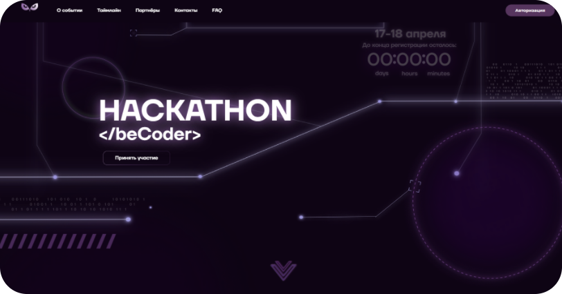

This page is about
my interests.
I'm probably the most passionate designer you will ever get to work with. If you
have a great project that needs some amazing skills, I'm your guy.
gamedev
Быть услышанным

Gris
2018
Грис — наивная девочка, запершаяся в собственном мире
из-за боли, окутавшей ее в реальности.

Stray
2022
Потерявшемуся, одинокому, оторванному от семьи
бродячему коту предстоит разгадать древнюю тайну,
вырваться из давно заброшенного кибергорода и найти
дорогу домой.
GRIS
Сквозь призму неизбежного...
GRIS - платформер эстетической направленности от испанской команды разработчиков "Nomada Studio". Но всё ли это, что можно сказать по поводу данной игры? - Конечно, нет, ведь то, что происходит на наших экранах буквально источает невообразимую атмосферу происходящего. Необъятный спектр тёплых оттенков окружающих нас локаций, филигранное, по-настоящему проработанное в образах и детализированное до мелочей повествование, глубокий, философский подтекст, насквозь пропитанный действительно живыми мыслями и чувствами - всё это в совокупности и созидает ту самую, возможно, не столь замысловатую, но такую прекрасную, светлую, пронизанную любовью и искренностью, отчасти даже нравоучительную историю маленькой и поначалу наивной девочки по имени Грис.
Сюжет. Чем же конкретно всё-таки притягателен мир главной героини? Почему эту игру можно полноправно назвать произведением искусства?
Итак, "GRIS" - история о маленькой девочке, которая во избежание боли и едкого забвения пытается укрыться в собственном мире, но таков ли основной посыл игры? - Лишь частично, ведь с самого начала повествования, зрителя затягивает образ не только самой Грис, но и матери, метафорически представленной пред нами в виде хрупкой статуи женщины, в ладони которой и просыпается её дочь. Сюжет разворачивается немыслимо быстро, охватывая игрока с первых минут сеанса и всё более погружая его в историю, полную драмы и зыбких надежд, в историю о любящей матери и её дочери.
Несомненно, в игре поднимается тема истинной материнской любви и взаимоотношения с ребёнком. Но почему именно это стало основным контекстом для такой трогательной истории? - Всё просто, ведь любовь матери - это ни с чем не сопоставимые чувства, и их, собственно, невозможно описать словами: столь они сильны и непоколебимы... Мать умеет любить так, как никто другой, поскольку именно она оберегала нас с самого рождения, именно она помогала постигать нечто новое и прекрасное в окружающем мире, именно она тот человек... тот единственный человек, что готов пожертвовать своей жизнью ради нашей. Мама - это неиссякаемый источник любви, самой чистой и искренней, и только благодаря ей мы живём и видим тот мир, что нас сейчас окружает.
Gris, you shine like a little star in the night sky. You have a soul and your light will penetrate into the heart of absolutely everyone.
Но что же произошло за кадром? Что произошло перед тем, как Грис попала в необычайный мир, полный, как чудес и забав, так и пугающего, мерзкого негатива? - К сожалению, тем резким рубежом стала смерть Грис, смерть дочери, которую мать любила, как самое дорогое сокровище на белом свете, чья жизнь была для матери самой важной и великой отрадой и, несомненно, причиной улыбаться каждый день, но... трагедия, несчастный случай пресекли жизнь самого ценного человека для матери, и теперь её разум и сердце проходят психологические стадии принятия неизбежного (модель доктора Элизабет Кюблер-Росс, подробно описанная в книге 1969 года "О смерти и умирании"). Грис, в свою очередь - человек чуткий и проницательный, она понимает скорбь, понимает всю ту душераздирающую боль, что с каждым днём всё более тяготит состояние её матери. Главная героиня невероятно сильно привязана к своей маме и даже будучи в мире, полном диаметрально противоположных представлений, готова потерять себя в море неизбежного ради того, чтобы жил её самый дорогой человек на свете, чтобы жил тот, кто и зародил в героине жизнь и тёплую страсть к открытиям, чтобы жил тот, кто смог ей показать и объяснить, что значит ценить каждый момент, по-настоящему чувствовать и любить... Жертвуя всем, Грис отправилась на помощь матери. Героиня хочет, чтобы та её услышала сквозь призму неизбежного, сквозь туман, окутавший истинное счастье... Грис пытается спеть, но теряет голос, пытается обрисовать ситуацию и показать своей матери чувства и переживания, но краски окружающего мира и цвета жизни, казалось бы, пропали навсегда. Отчаяние. Но главная героиня не останавливается на этом, а действительно рвётся к тому счастью, что так заслужила её мама. На этот раз девочке предстоит пройти по нелёгкому пути, поддерживая своего близкого человека. Поиск устойчивых реалий и спектра тёплых оттенков, собственно, и становится главной целью на протяжение всего игрового сеанса...
I lost my voice...
Сюжет. Что же ждёт героиню в этом путешествии?
Грис - отчаянная, но открытая к добру и свету душа. Доброта, искренность поступков и намерений, рассудительность и целеустремлённость - это то, что так умеренно и тихо таилось в сердце героини, пока филигранное многообразие мира и обстоятельств не открыло в ней особый потенциал, кой видела с самого рождения мать Грис. Психология данной игры построена на постепенном пробуждении сознания от долгого сна, и, именно проходя через некие этапы преодоления, познания, Грис и её мать сражаются со своими же тёмными уголками сознания, будучи совсем в одиночестве, в таинственных, параллельных по отношению друг к другу мирах.
Касательно геймплея:
Мир, в котором очутилась Грис, не только привлекателен в своём философском представлении, но и в геймплее. Процесс игры для вас станет приятным бонусом в добавлению к сюжету, ведь для прохождения данного платформера потребуется и находчивость в решении занимательных головоломок, и предельная внимательность в поиске звёзд и воспоминаний. Сами движения героини и локации построены таким образом, чтобы можно было без особых усилий добраться до определённой точки. Платье Грис в повествовании станет вашим верным помощником, ведь именно с его помощью можно перемещаться различными способами, используя способности для непосредственного контакта с окружением. Плавное перемещение объектов и эстетично выполненная анимация поражает своей проработкой и детализацией.
Играя в "Gris" не чувствуешь усталости, ведь каждый элемент, каждая составляющая лишь добавляет комфорта при перемещении, а вовсе не покрывает игрока излишними концепциями. Здесь нет какого-то текстового отклика, но есть особый - визуальный: мы словно контактируем с окружением, помогая цветам расцвести, или же разрушая хрупкие объекты - таким образом, мы сами задаём темп нашему геймплею.
Музыкальное сопровождение. Визуал
Прекрасные саундтреки смогли в полную меру дополнить атмосферу необходимым и тонким представлением реалии. Казалось бы, без них не было бы тех переживаний и эмоций от прохождения, и это правда. Визуал игры - огромное преимущество продукта, ведь именно он приближает нас к чувству эйфории от наслаждения эстетикой. Нежные, плавные мелодии вкупе с детализированными локациями, представляют историю Грис притягательной и насыщенной живым чувством.
Вывод:
Путешествие главной героини есть некая аллегория жизненного пути, через который проходит порой каждый из нас. Именно этот путь показывает значимость и важность неприметных на первый взгляд мелочей. Добавлю только, что все мои слова не способны в полную меру описать то светлое, восхитительное многообразие и великий потенциал данной истории.
Рекомендую ознакомиться с этим произведением искусства и неспешно окунуться в мир, пронизанный искренними чувствами и эмоциями, вкупе с нежной эстетикой и актуальными проблемами действительности. Помимо занимательного сюжета, в игре присутствует прекрасное музыкальное сопровождение и визуал, окутывающий абсолютно каждого в атмосферу и эстетику сей небольшой, но такой трогательной истории.
STRAY
Нажмите Left Alt, чтобы мяукнуть
Stray– долгожданная адвенчура в сеттинге киберпанка от BlueTwelve Studio. Бесспорно много ожиданий было возложено на эту игру уже с самого выхода трейлера: уникальный геймплей, неподражаемое визуальное и музыкальное сопровождение, ну и, конечно же, усатая рыжая мордочка котика, готового пуститься в мир, полный приключений, и разузнать глубоко сокрытые тайны загадачного города. Тем не менее, оправданы ли эти ожидания и стоит ли уделить внимание данному проекту? С этим мы сейчас и разберёмся детально.
Сюжет: классика жанра или инновация?
Играя за рыжего бродяжку, мы чуть ли не с самого начала приключения погружаемся во мрак, жадно обволакивающий современные города и ветхие трущобы, стремительно взращивающий враждебных существ – Зурков, которые с минуты на минуту были готовы изничтожить весь окружающий мир, лишить жизни любого, кто встретиться на их пути. Человечество в свою очередь перенесло сознание в роботов, до сей поры бродящих по узким переулкам, увешанными неоновыми вывесками, а в сердцах обезжизненных городов же воцарилась строгая система и безнравственный быт.
Как сохранить цивилизацию и защитить жителей от неминуемой гибели? Как вселить надежду и свет в сердца отчаявшихся? Именно эти задачи, требующие ответственности и несоизмеримой храбрости, предстоит нам решить во имя спасения казалось бы отречённого общества.
— Посмотри наверх: всё небо усеяно множеством ярких звёзд!
— Это не звёзды, а лишь лампы на крыше величественного комплекса...
shackling horror of hopelessness
Так, адвенчура предлагает игроку множество тем и проблематик в типичном и классическом для киберпанка стиле. Она вовсе не подразумевает глубокой философской интерпретации, однако это не делает её скучной и нединамичной, скорее, даже наоборот – лёгкой для восприятия, уютной, комфортной и в то же время дающей отчётливо понять весомое значение борьбы и отважного стремления к благим целям.
Визуал и саунд: от чутких мелодий бродячего музыканта до неоновых бликов и деталей интерьера
Говоря о Stray, невозможно не упомянуть чарующую взгляд графику и гармоничное звуковое сопровождение, которые пронизывают повествование насквозь, созидая необыкновенную атмосферу, придавая уникального шарма нашему приключению. Куда бы вы не пошли: будь то таинственный бункер или же чья-то квартира – везде вы встретите огромное множество графических и звуковых символов и знаков, отсылающих к интригующей истории, коснувшейся человества.
Так, бродя по наполненным яркими огнями, туманным закоулкам Мидтауна, невольно изучаешь все окружающие детали, которые настоль филигранно были вписаны level-дизайнерами, что ты начинаешь словно проникаться особенностями быта местных жителей, их привычками и даже переживаниями. Каждая травинка в саду, семейная фотография и ветхая нотная бумага с греющей душу мелодией – формирует мир на самом деле чуткий и глубокий, а вовсе не убивающий всякую надежду на светлое небо над головой. Но чтобы это понять, чтобы почувствовать в себе должные силы, нужно постараться не уйти в себя, нужно окунуться в момент, увидеть искреннее счастье в мелочах и наконец податься навстречу заветной мечте.
Just sleeping
Стоит также упомянуть, что Stray – сравнительно нетребовательная игра, и вместе с тем ей удаётся поразить своим качественным графическим насыщением, чёткой картинкой, отлично подобранным, совсем ненавязчивым саундтреком и, собственно, оптимизацией геймплея.
Квесты: интуитивный геймплей для каждого
Адвенчура про рыжего котика не столь делает упор на сложном, комплексном геймплее, сколь на самом ощущении момента, потому не стоит здесь ждать сложных загадок и трудных для восприятия символов. Конечно, вас будет ждать пара десятков мини-квестов, решение которых окажется вполне резонным и отчётливым для понимания. Передвигаясь от одной подсказки к другой по логическому кошачьему чутью, вы, даже того не подозревая, можете интуитивно выполнить сюжетную задачу, от чего становится в конечном итоге очень приятно. Так, просто из любопытства изучая игровой мир безо всяких на то намёков, в Stray можно последовать замыслу разработчиков и прочувствовать весь спектр переживаний и размышлений нашего усатого героя.
Итог: ложные ожидания или же тёплый, комфортный синглплэй?
Stray изначально не позиционирует себя как крупнобюджетный проект с глубоко проработанным сюжетом и инновационным геймплеем, однако это вовсе не делает эту игру чем-то хуже трипл-эй. Повествование мгновенно погружает игрока в небольшую поучительную историю. Да, довольно простую, безо всяких излишеств, но всё же такую душевную и импазантную, такую, которая напоминает об извечных человеских ценностях: о нравственности, о жизненном пути, о цели... Несчётное множество ярких образов, детализированных в самых тонких мелочах предметов быта, а также гармоничный саундтрек, который каждому придётся по вкусу и поспособствует полному погружению в необъятный мир игры. Не пытайтесь пробежать эту сюжетную адвенчуру как можно быстрее – наоборот, ощутите атмосферу каждого уголочка, в которых спрятаны воспоминания героев, пробегитесь по каждому балкончику, освещённому неоновым светом, проникнетесь каждым словом и выделите для себя свою истину и мораль сей истории.
Stray world
Без доли сомнения рекомендую Stray всем, кто хочет и готов насладиться и испытать счастье от каждого момента жизни.
web & graphics design
Креативная сторона
| Тип | Примеры Работ |
|---|---|
| Веб-Дизайн | |
|
Веб-сайт для Hackathon </beCoder> – это шанс для |
"> |
|
Веб-сайт для SPbPU Talks — общегородская |
|
| Графический Дизайн | |
|
Графический дизайн для rJBT'23 -
|
|